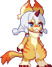

橘花花
樱养的猫
樱饲养的猫，在异变发生后变成人形。

- 饲养者
- 樱
- 异变后的形态
- 人形
来源与许可
- 萌娘百科《咸鱼喵喵》及其贡献者 · CC BY-NC-SA 4.0 · 节选整理与改写
2026-10-24 实际读取并节选改写；保留基本设定、个人资料及原文旁注的含义，将黑幕、身份揭示和结局信息归入剧透。未引用未建立的独立人物页。
原版游戏图像的权利归相应权利人；文字的知识共享许可不适用于这些图像。
樱饲养的猫，在异变发生后变成人形。
樱养的猫
樱饲养的猫，在异变发生后变成人形。

2026-10-24 实际读取并节选改写；保留基本设定、个人资料及原文旁注的含义，将黑幕、身份揭示和结局信息归入剧透。未引用未建立的独立人物页。
原版游戏图像的权利归相应权利人；文字的知识共享许可不适用于这些图像。